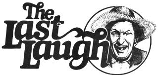

Avoid fried foods which angry up the blood.
If your stomach disputes you, lie down and pacify it with cooling thoughts.
Keep the juice flowing by jangling around gently as you move.
Go very lightly on the vices such as carrying on in society. The social ramble ain't restful.
Don't look back. Somethin' might be gaining on you.
Satchel Paige's Rules
For Rightful Living
"There are many in this old world of ours who hold that we all get the same amount of ice. The rich get it in the summertime, and the poor get it in the winter."
Bat Masterson
Well sir, summer has set in for fair here in Barren County this year. Ole Man Bartlett-who's 84 if he's a day and who once spent four years prospectin' for gold in Death Valley-says that he's been to three state fairs, two rattlesnake roundups, and a goat ropin' and he ain't never seen nothin' like it.
Ole Ott was huntin' for a little shade around to the side of the Plumtree Crossin' General Store with some of the other loafers last Wednesday when he made his point. "By damn, it's hot," he was a'sayin'. "And dry! Why, I haven't sweat nothin' but dust for the last six weeks, the grasshoppers down in my hayfield are all carryin' canteens to keep from dyin' of thirst, and when I went fishin' down in the pond last evening all I could catch was dried herring."
Well now, Newt Blanchard-who'd just popped the cap offen a bottle of Nehi orange-wasn't about to let Ott get away with all the good "hot and dry" stories that day . . . even if it was Wednesday. So he piped right up with: "I can believe that for an actual fact 'cause my mouth was so dry the other day that the only way I could whistle for my dog was by ringin' a bell. I needed him to help me round up the cows, you see. The pasture's been doin' so poorly for lack of rain that my cattle's got starved down to the point where they can climb through the holes in the chicken wire and hide in amongst the Rhode Island Reds . . . and that's annoyin'."
"Say now," it was One Of The Jarvis Boys puttin' in his two cents' worth, "the rest of you fellers can go on all you want about this summer. But I'll take it this way any day over that wet weather we usta have all the time when I was stationed down in the Louisiana bayou. Why mister, that delta country's jest too blamed damp for me. Why the only time the sun ever shines down there is when it rains. And believe it or not, all the hound dawgs I saw back in those swamps was infested with crawdads 'stid of fleas. I swear! The onliest chickens I ever run across back up those sloughs all had webbed feet and their eggs hatched out snappin' turkles."
"Say yourself," retorted Ole Man Bartlett. "I've been meanin' to ask you for some time . . . jest why in hell is it that you're knowed as One Of The Jarvis Boys and your twin brother goes by the name of T'other Jarvis? That sure can't be your given names."
"Nope. It tain't. My real name's Jervis and my brother's is Jorvis. But Skeeter Ridges never could keep us straight in his mind that way. He was always callin' me Jorvis or my brother Jervis or both of us 'hey you' all the time . . . until the day Jorvis caught him poachin' squirrels down in our woods. Well, ole Skeet was so flustered at bein' walked up on that way and all that he just blurted out, 'Are you The One Jarvis Boy . . . or T'other?' And Jorv-fore he began to warp Skeet with an oak limb-snapped right back, 'I'm T'other.' And that's what we've been known as ever since and ole Skeet ain't never got us mixed up again to this day."
"You know, talkin' about Skeet"-it was Emory Smithers, who'd just walked up and plopped down in the shade-"I seen him do the damdest thing the other day. I swear, I believe the heat's gettin' to 'im.
"You know how he always leaves that beat-up old pickup of his parked in the alley there next to the poolroom every time he goes into town . . . well, while Skeet was over to the tavern soppin' up schooners of beer last Friday, some of the guys sneaked out the back door, up the alley, and jacked up and blocked the rear end of his truck a coupla inches off the ground.
"Well, by the time Skeeter staggered out of the bar-musta been around four in the afternoon-he wasn't payin' too much attention to the finer details of things, if you know what I mean. And he climbed up there in the cab, and cranked that old truck up, and eased her.inta low . . . and then second . . . and third. He wasn't movin' an inch, you understand, but enough people-I reckon-was walkin' by to make him think he was a'goin' somewhere. Cause -ole Skeet was jest a'sittin' there wavin' at the folks walkin' by-and they was a'wavin' back at him and all-and everybody seemed to be havin' a good time and ole Skeet was havin' the best time of all.
"After a while, though, Skeeter sorta got a funny look on his face and he opened his truck door and studied the ground for a couple, minutes while he did some fancy double-shiftin' and some even fancier triple-shiftin' and some other messin' around with the gears. Eventually it dawned on him what was a'goin' on and, the last thing I knowed, he was whippin' out his huntin' knife and hollerin' that he was gonna cut some practical jokers three ways: deep, wide, and frequent. If the sheriff hadn't happened along right then and escorted ole Skeet off to the pokey for the evenin', I believe he'd of done it too."
It was Newt Blanchard's turn again. "That sounds like Skeet all right. I declare! There's some days-especially when it's hot and dry this way-that I don't trust that fellow at all. When it gets hot, Skeet starts a'drinkin' . . . and when he's drinkin', he's liable to do anything.
"I mind the time a few years back that Skeet took to the bottle on a hot summer's night and, for some reason, wound up at 3:00 a.m. out in my garden jest a'standin' there as stiff as a tin soldier with his arms straight out to the sides. 'Skeet,' I says, 'what the hell you think you're doin'?' 'Why,' he says, 'I'm volunteerin' my services as a scarecrow.' 'Scarecrow!' I says, 'Scarecrow! Why, good godfreys, man! Crows never bother a garden at three in the morning.' 'No,' says Skeet, 'But there's nighthawks about.' I had to brain him with a bean pole and send him home on Lafe Higgins' mule."
"Well, you can talk about Skeet all you want to"-it was Ole Man Bartlett again-"but he's a damn sight easier to get along with now than he musta be. Why, he's downright sociable these days compared to when he lived alone up on Possum Trot Mountain. Back in them days Skeet didn't do nothin' but drink 'shine and get ornery. Course it didn't matter too much since he lived so far back in the hills that that old battery-powered radio of his didn't pick up The Grand Ole Opry until Tuesday and there was very seldom anyone around when Skeet really got his face stuck in a jar for some serious drinkin'. Still and all, he was a holy terror in them days-his pappy usta say they hadda tie up Skeet's off-behind foot to give him a haircut-and I'll take today's Skeet over that one any time."
"Did someone mention my name?" It was Skeeter Ridges hisself, comin' around the side of the store from the back. He musta shortcut his way through Doe Thromberg's yard. "Man, I mean to tell you it's hot out today. And dry! Why, would you fellows believe that I haven't sweat nothin' but dust for the last two months! " "Skeet, you might as well save your breath. We've already heard that one today. . . and a few more stories that don't bear repeatin'. Why don't you jest go on in the store there and buy a pouch of Red Man Chew and a pack of Juicy Fruit gum and then I'll have you a spittin' contest. Your choice of weapons. And, after that, we'll all jest sorts, stretch out here in the shade and go to sleep."
|
 |
|
|